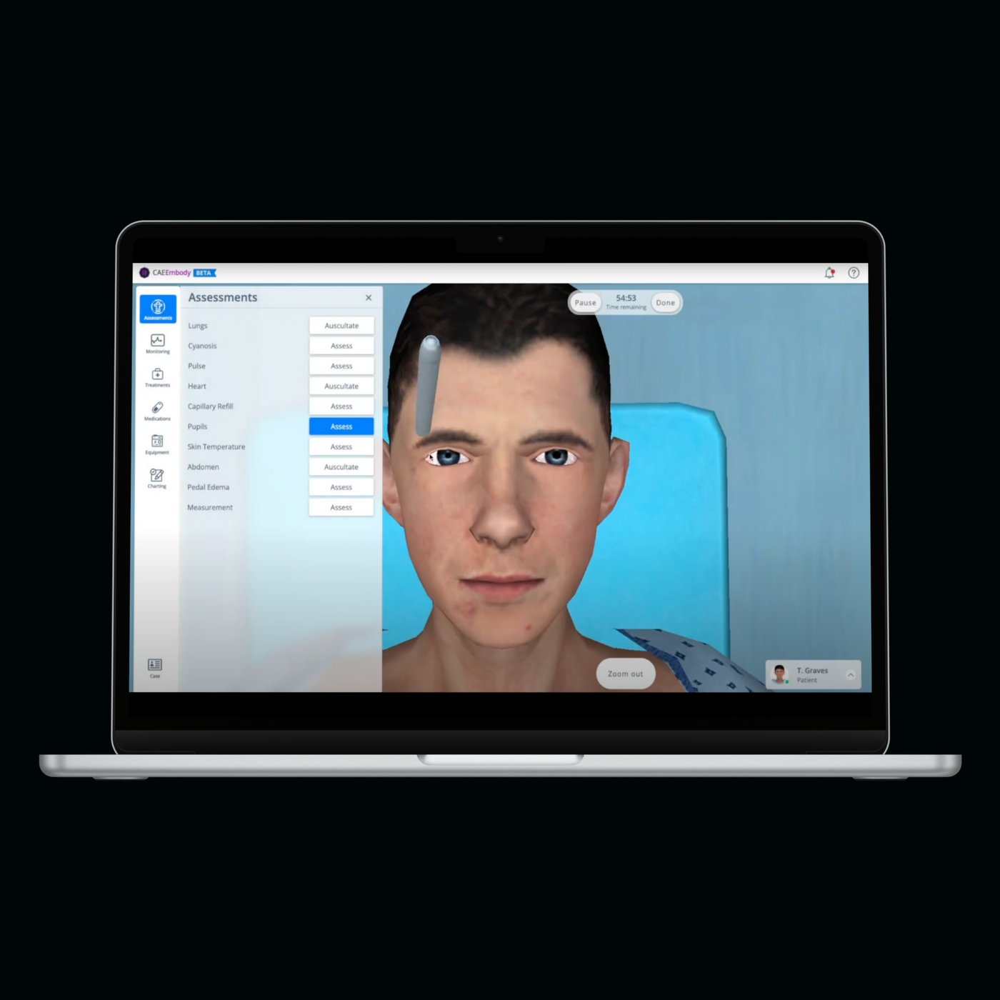
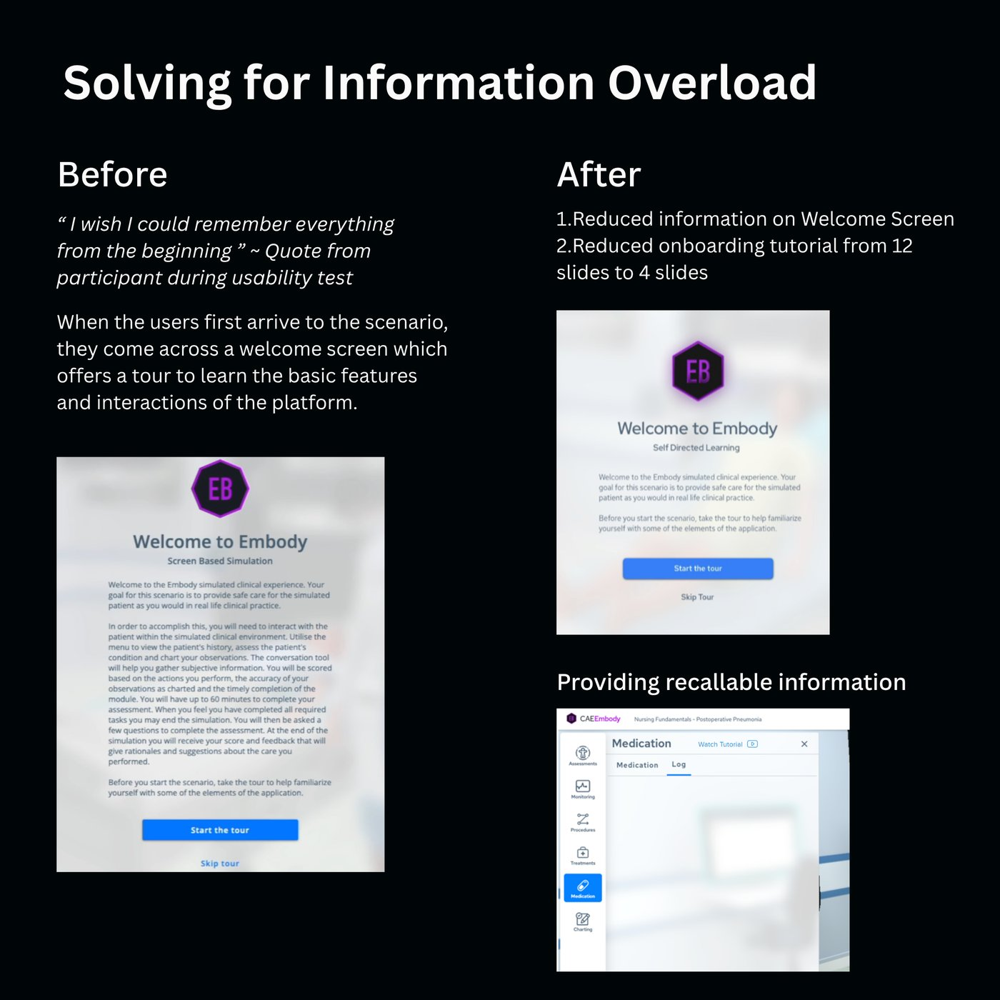
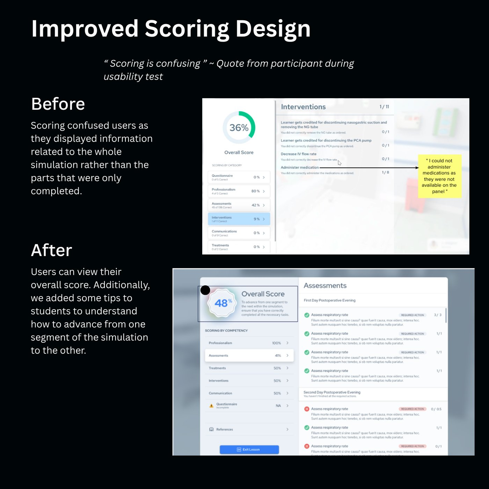
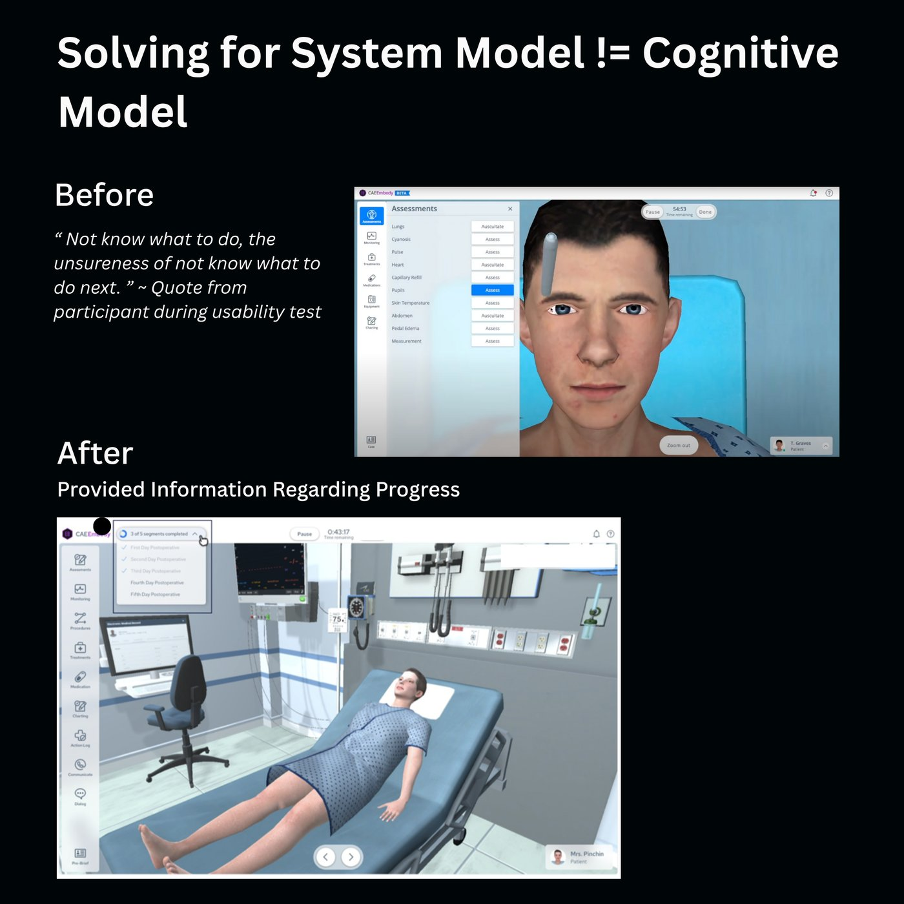

Designing an interactive product for simulated training
CAE Embody is a screen-based clinical simulation platform where nursing students practice caring for a virtual patient - safely, before they ever touch a real one. I led the end-to-end design of two interactive training modules, from usability research through shipped interface.

The challengeMake the interface disappear
Simulation only works when students spend their attention on the patient, not the software. Usability testing told a different story: participants were burning cognitive effort fighting the interface - trying to remember instructions, decode their scores, and figure out what to do next.
I planned, designed, and conducted usability testing sessions, managing participant recruitment and scheduling while prioritizing availability and confidentiality. Synthesizing the findings surfaced three recurring friction themes - each one captured in the participants' own words.
Problem 01 · Information overloadEverything, all at once
"I wish I could remember everything from the beginning." - Participant, usability test
The welcome screen greeted students with a wall of text, followed by a 12-slide onboarding tour. By the time the simulation started, most of it was forgotten - and none of it was findable again.
The redesign followed one principle: tell people what they need, when they need it. I cut the welcome screen down to its essentials, reduced the onboarding tour from 12 slides to 4, and made key guidance recallable in context - like a "Watch Tutorial" link placed directly inside the Medication panel, at the exact moment a student might need it.

Problem 02 · Scoring confusionA score that punished progress
"Scoring is confusing." - Participant, usability test
The original score was calculated against the entire simulation - including segments the student hadn't reached yet. A learner doing everything right could still see a demoralizing 36%, with no explanation of why or what to do about it.
The redesign reframed scoring around competencies - professionalism, assessments, treatments, interventions, communication - so students could see exactly where they stood in each skill. Alongside the overall score, we added guidance explaining how to advance from one segment of the simulation to the next, turning the score from a verdict into a map.

Problem 03 · System model ≠ cognitive modelLost inside the simulation
"The unsureness of not knowing what to do next." - Participant, usability test
The system knew the simulation had five segments. The students didn't. With no sense of where they were or what remained, uncertainty itself became the obstacle - a mismatch between how the system was structured and how learners thought about their progress.
The fix was to make the system's model visible: a persistent progress indicator - "3 of 5 segments completed" - with each day of the postoperative scenario listed and checked off. Students always know where they are, what's done, and what comes next.

OutcomesMeasured, not assumed
The redesigned modules shipped after I presented the research outcomes and design rationale to product owners, engineers, and clinical subject-matter experts - driving alignment on what students actually needed.